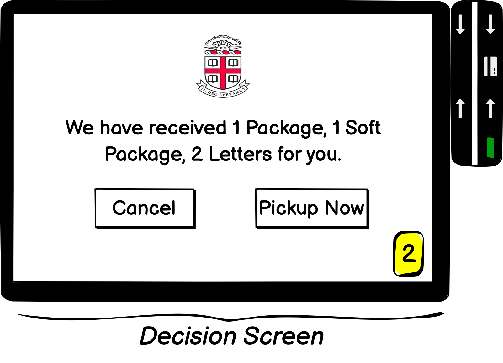
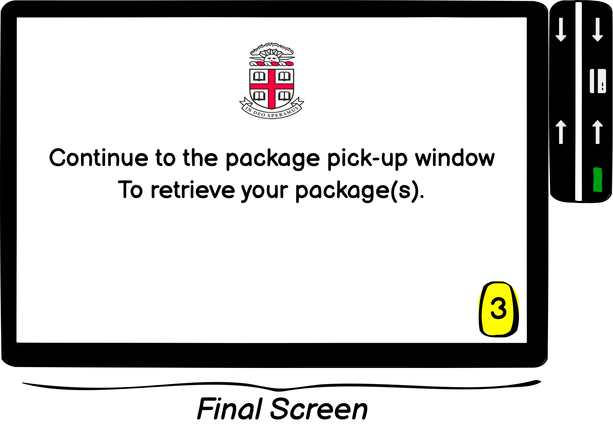
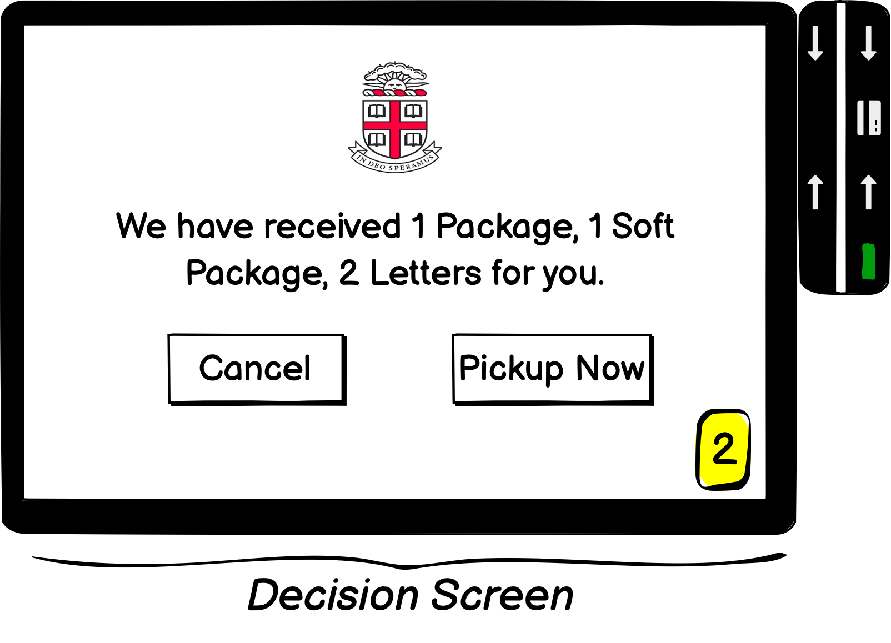
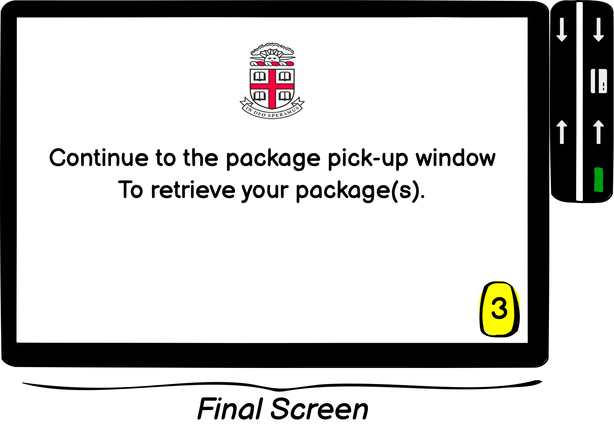
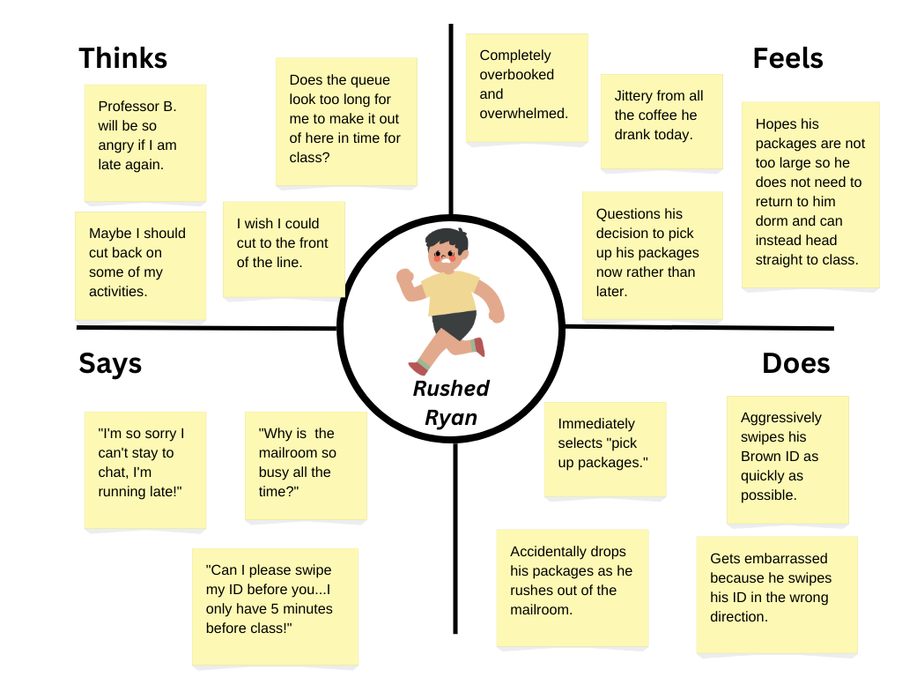

Personas & Storyboarding
Overview
Through this project, I observe how users interact with and experience a public interface: the mailroom kiosk at Brown University. After conducting contextual inquiry, I create personas and a storyboard to reflect the typical user's journey through retrieving their mail.
The Interface: Mail Services Kiosk
As you approach the entrance of the Mail Services Lobby, you'll
stumble upon 2 electronic kiosks that allow students to see
how much mail they have (if any) and indicate to Mail Services
that they have arrived to collect it.
Students generally visit the kiosks after receiving an email
from University Mail Services notifying them that their mail has been
processed and is ready for pick up.
To interact with the kiosks, the students must first swipe
their Brown ID. If they have packages ready to be picked up,
they can choose to retrieve them now or cancel the process and return at
a later time. Finally, they are either transferred to the final screen
or back to the home page.
 



Contextual Inquiry
Key Observations
- Most users misswiped their Brown ID at least once because:
- User's ID was facing the wrong direction.
- User swiped ID too quickly.
- Between the 2 kiosks, the orientation of the card readers were different (one was oriented vertically, the other horizontally). Users more frequently misswiped while using the kiosk on the right.
- If users spent ~10 seconds misswiping, they would attempt the other kiosk.
Interviews
I interviewed 5 users to better understand their expectations, experiences, and challenges while interacting with the mailroom kiosk.
Interview Questions:
- How frequently do you use this interface and under what circumstances?
- Do you normally select “pick up packages” or “cancel”? Why?
- Are there any parts of this interface that you find confusing or challenging?
- Is there any information that you think is missing or is redundant from this screen?
- How long do you expect this entire process to take, from swiping to receiving your packages? Does the actual time spent match your expected time spent?
Interview Summary:
- Most users use the kiosk 1-2 times per week. The frequency of their visits largely depends on whether they allow their packages to accumulate or pick them up soon after each package/notification is received.
- The users interviewed had never pressed the "cancel" button.
- While users find the interface fairly intuitive, they have issues swiping their ID. Specifically:
- Users forget/are confused about which way to swipe (especially with the differing orientation of the card readers).
- Sometimes, after the swiping of an ID, the screen displays a nonsensical sequence of numbers. The user then has to manually delete the sequence and reswipe their ID.
shop
- Users desire information about the size of the package received so they know whether they need to return to their dorm after picking it up or can stuff it in their backpack and continue with their day.
- Users often use the kiosk between classes. Thus, they largely only swipe their ID if the mailroom does not look too busy. Nonetheless, they desire an estimation of the wait time.
Personas & Empathy Maps
1. Rushed Ryan
Rushed Ryan is a junior student-athlete at Brown University.
He has an extremely tight schedule, and he is stressed he won't make it from the mailroom to his Biology seminar in time. The faulty card reader and lack of information about wait time makes it hard for Ryan to judge whether or not he can grab his packages quickly enough to make it to class on time.
Many Brown students use the kiosk between classes and activities. They are often in a rush and thus experience the same issues as Ryan.
